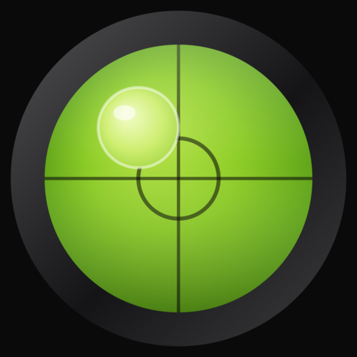
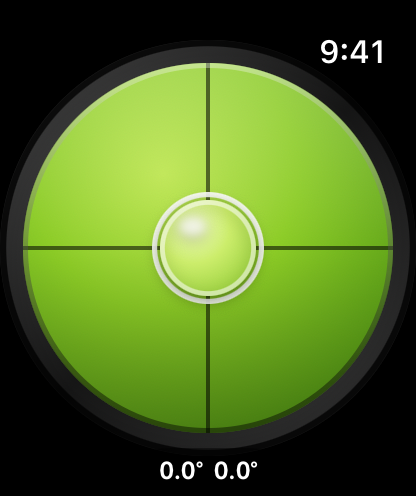
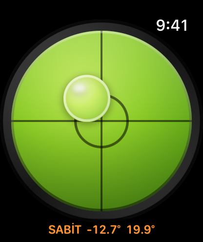

Su Terazisi Watch Special
Bileğinizdeki su terazisi. Saati bir yüzeye dayayın; kabarcık yüksek tarafa kayar ve her eksendeki eğim derece olarak görünür. Yüzey düzleştiğinde saatiniz titreşir, ekrana dokunarak göremediğiniz yerlerdeki ölçümü dondurabilirsiniz.
watchOS 10 veya sonrası gerekir.
İndir

Destek
Sorunuz mu var, bir hata mı buldunuz, yardıma mı ihtiyacınız var? Bize yazın. Gelen her mesajı okuyoruz.
Yazmadan önce
Önce şunları denemekte fayda var:
- "Hareket sensörü yok" mu yazıyor? Uygulama saatin hareket sensörlerine ihtiyaç duyar. Bu mesaj, sensörü bulunmayan Watch simülatöründe görünür. Gerçek bir Apple Watch'ta görüyorsanız saati yeniden başlatıp uygulamayı tekrar açın.
- Kabarcık hareket etmiyor mu? Ekranda SABİT yazıp yazmadığına bakın. Yazıyorsa ölçüm dondurulmuştur. Ekrana bir kez dokunarak devam ettirin.
- Yüzey düz olduğunda titreşim gelmiyor mu? Watch Ayarlar → Sesler ve Dokunsallar bölümünden dokunsal geri bildirimin açık ve şiddetinin en düşük seviyede olmadığını kontrol edin.
- Değerler oynak mı görünüyor? Saati havada tutmak yerine ölçtüğünüz yüzeye düz şekilde dayayın. Eliniz her zaman biraz hareket eder ve kabarcık da bu hareketi izler.
Sık Sorulan Sorular
- iPhone'um olmadan çalışır mı?
Evet. Bağımsız bir saat uygulamasıdır. iPhone uygulaması ve eşleştirme adımı yoktur. - Ne kadar hassas?
Apple Watch eğimi hareket sensörleriyle ölçer, işlenmiş bir cam hazneyle değil. Kalibre edilmiş hassas bir su terazisinin yerine değil, günlük hızlı kontroller için kullanın. - Ne zaman "düz" sayılır?
Yaklaşık 2,9° içinde. Bu aralığa girdiğinde ortadaki halka beyazlar ve saat sizi titreşimle uyarır. - Kolumu indirdiğimde çalışır mı?
Evet. Her Zaman Açık ekranda da okunabilir kalır; biraz kararır ve pil tasarrufu için daha seyrek güncellenir. - Neden bir yerine iki kez titreşiyor?
Ölçümü dondurup devam ettirdiğinizde hissettiğiniz tek titreşimle karışmaması için. Ayrıca giysi kolunun altından da hissedilecek kadar belirgindir. - İnternet bağlantısı gerekir mi?
Hayır. Uygulamanın hiçbir şekilde ağ erişimi yoktur. - Herhangi bir veri topluyor mu?
Hayır. Hareket değerleri yalnızca kabarcığı çizmek için kullanılır ve saatinizden dışarı çıkmaz.
Kullanım


Su terazisini okumak
Kabarcık, gerçek bir su terazisindeki sıvı gibi yüzeyin yüksek tarafına doğru kayar. Kabarcık ortadaki halkaya oturana kadar o tarafı alçaltın ya da karşı tarafı yükseltin.
Kadranın altındaki iki sayı, her eksendeki eğimi derece cinsinden gösterir: ilki sağa sola, ikincisi öne arkaya. İkisi de sıfıra yakınsa yüzey düzdür.
Düz konum titreşimi
Yüzey tam düz konuma geldiği anda saat, arka arkaya iki belirgin titreşim verir. Böylece zor bir açıda beklerken gözünüzü bileğinize değil işe verebilirsiniz.
Ölçümü dondurmak
Ekranın herhangi bir yerine dokunarak ölçümü dondurabilirsiniz. Sayıların yanında SABİT belirir ve sayılar turuncuya döner. Tekrar dokunduğunuzda canlı ölçüm devam eder.
Bu, ölçüm sırasında göremediğiniz yüzeyler içindir. Saati bir rafın altına ya da dolabın arkasına dayayın, dokunup dondurun, sonra kolunuzu geri getirip değeri okuyun.
Uygulamayı ilk açtığınızda ekranda birkaç saniye Sabitlemek için dokun yazar; ekranda kendini belli etmeyen tek hareket budur. Bir kez kullandıktan sonra artık görünmez.
Saat aşağı bakarken
Saati dikeyin ötesine çevirip ekran yere baktığında gösterge Saat aşağı bakıyor olarak değişir. Kadranın rengi soluklaşır ve kabarcık kenarda durur; tıpkı gerçek bir su terazisini ters çevirdiğinizde kabarcığın tabana yapışması gibi.
Bu bilinçli bir davranış. Ekran aşağı bakarken yerçekiminin saat yüzeyi boyunca etkiyen bileşeni neredeyse sıfırdır ve olduğu gibi okunsa kusursuz bir düzlük gibi görünürdü. Uygulama bu durumu düz saymaz, ölçümü de dondurmaz — dokunduğunuzda ölçüm yerine kısa bir hata titreşimi verir.
Kol aşağıdayken
Kolunuzu indirdiğinizde saat Her Zaman Açık moduna geçer; uygulama biraz kararır ve pil tasarrufu için daha seyrek güncellenir. Kabarcık hareket etmeye devam eder ve değerler okunabilir kalır, bir bakış yeterlidir.
Yasal
Gizlilik Politikası
Son güncelleme: Ağustos 2026
Toplamadığımız Bilgiler
Su Terazisi Watch Special hiçbir veri toplamaz. Hiçbir kişisel bilgiyi toplamaz, saklamaz, kullanmaz, paylaşmaz, satmaz veya aktarmayız.
Hareket Sensörleri
Uygulama, saatin ne kadar eğimli olduğunu hesaplamak için Apple Watch hareket sensörlerini okur ve bu değerleri yalnızca ekrandaki kabarcığı çizmek için kullanır. Değerler saatinizde kalır; saklanmaz, paylaşılmaz, hiçbir yere gönderilmez.
Ağ Erişimi Yok
Uygulamanın internet erişimi, kullanıcı hesabı, analiz aracı, reklam veya üçüncü taraf kodu yoktur.
Çocukların Gizliliği
Hiçbir veri toplamadığımız için, Çocukların Çevrimiçi Gizliliğini Koruma Yasası (COPPA) başta olmak üzere ilgili tüm düzenlemelere uyuyoruz.
Bu Politikadaki Değişiklikler
Bu Gizlilik Politikasını zaman zaman güncelleyebiliriz. Değişiklikler bu sayfada yayınlandığı anda geçerli olur.
Bize Ulaşın
Bu Gizlilik Politikası hakkında sorularınız için: support [at] hoshinosoftware [dot] com